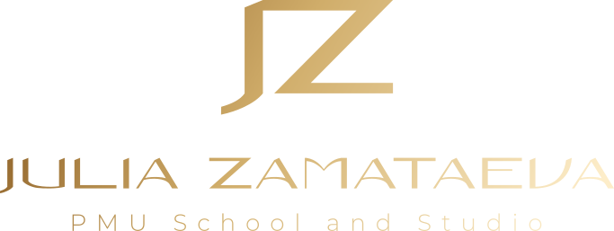

Кейс
JZPMU → кириллица
Студия перманентного макияжа Юлии Заматаевой. Бренд работал на латинице, а 100% клиентов — русскоязычные.

Было Стало
Стало
Проблема: логотип не запоминается
Аббревиатура JZPMU — пять латинских букв, которые невозможно прочитать по-русски. Клиенты не могли назвать студию, найти её в поиске, порекомендовать друзьям.
Решение: мы разработали новый логотип на кириллице, сохранив узнаваемые элементы: золотистую палитру, элегантный характер шрифта и аббревиатуру как акцент.
Дополнительно создали полный брендбук с правилами использования, палитрой, типографикой и гайдлайнами — в формате, который можно сразу отправить любому подрядчику.